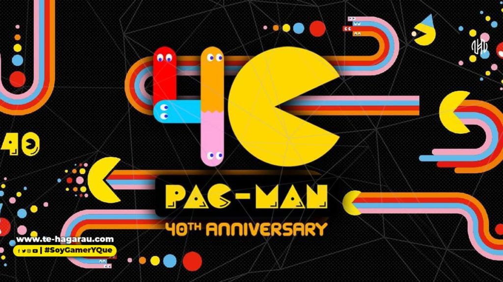
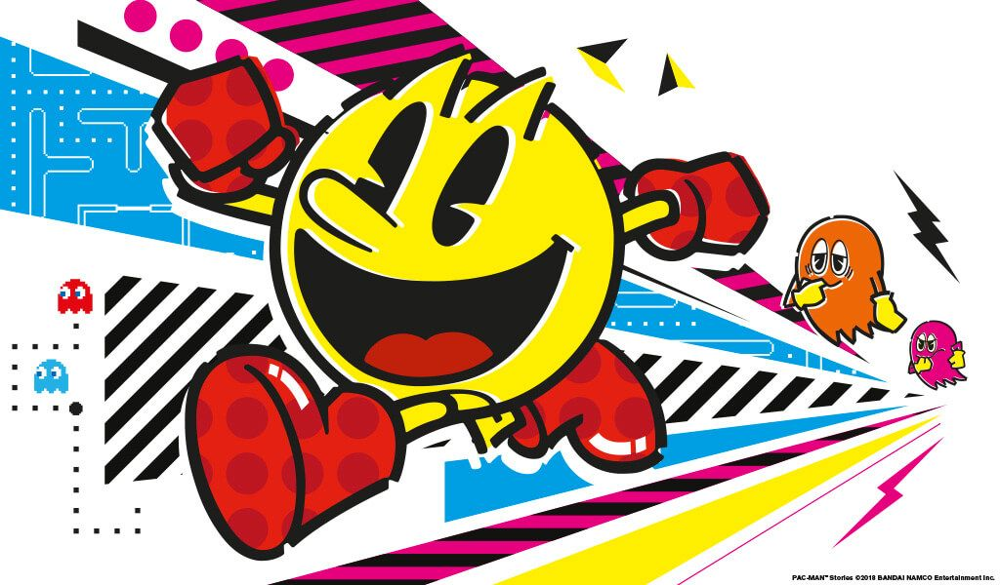

40TH aniversario de Pacmanm
el aniversario de un clasico entre clasicos, nuestro comelon amarillo.

En 2020 se celebran los 40 años del lanzamiento de Pac-Man, uno de los clásicos de la historia de los videojuegos. En la década de 1980 se convirtió en un auténtico fenómeno social y hoy se considera una leyenda. Un paseo por los símbolos de la cultura popular de los videojuegos, los campeonatos mundiales y las series y películas inspiradas en el mítico juego de arcade, así como las nuevas narrativas, los videojuegos de realidad virtual e incluso los e-sports a los que ha dado paso Pac-Man.

Pac-Man (パ ッ ク マ ンPakkuman ), anteriormente conocido como Puck Man en Japón, es el protagonista principal de la serie Pac-Man . Es el esposo de la Sra. Pac-Man y el padre de Baby Pac-Man y Jr. Pac-Man.
Pac-Man fue creado por Toru Iwatani y es la famosa mascota de Namco . Desde su primera aparición en 1980, Pac-Man se ha convertido en un ícono legendario de los videojuegos y es uno de los personajes de ficción más reconocidos del mundo.

God of War Ragnarok reaparece a lo grande: nuevo tráiler del regreso de Kratos
God of War: Ragnarok será, salvo enorme sorpresa, uno de los juegos que marcarán la historia de PS5. Cuando hablamos de la saga de Santa Monica Studio lo hacemos de una de las franquicias más míticas de la historia y su quinta entrega va a llegar en el mejor momento. ¿Por qué? Porque tras lo que parecía el final de Kratos y su lucha contra los Dioses griegos en PS3, revivió en PS4 con la cuarta entrega de la saga
Leer mas
Metal slug como padre de los run an gun pixel art
Metal Slug (メタルスラッグ Metaru Suraggu?) es una serie de videojuegos de tipo run and gun y Matamarcianos lanzado inicialmente en las máquinas arcade Neo-Geo y en consolas de juegos creadas por SNK. Ha sido también adaptadas a diferentes consolas, tales como la Sega Saturn, la PlayStation, Neo Geo Pocket Color y más recientemente, la Game Boy Advance, PlayStation 2, Xbox, Xbox 360, PlayStation 4, Android, iPhone, iPod touch, Nintendo DS, PlayStation Portable, Wii y Nintendo Switch. El juego es muy conocido por su sentido del humor y su animación hecha a mano, por lo que es considerada como una de las mejores y más destacadas series en su género.
Leer mas
El Metaverso es el futuro que Zuckerberg quiere para Internet y te contamos qué es
Y es que el pasado 28 de octubre, en el contexto de la Facebook Connect, el creador de Facebook protagonizaba el anuncio de que su empresa y todos los servicios asociados a ella se cambiarían el nombre a Meta, cambiando por completo su marca y abandonando Facebook. Bajo el paraguas de dicho nombre entran Facebook, Instagram, WhatsApp, e incluso Oculus, en un esfuerzo por asociar el término Meta con el concepto del mencionado Metaverso. El verdadero protagonista de una presentación de más de una hora y treinta minutos.
Leer mas:quality(75)/cloudfront-us-east-1.images.arcpublishing.com/elcomercio/QVZRKHOQ7VF4JHPJQYV5MNFAGI.jpg)
Xbox Series X/S y Xbox One reciben estos juegos gratis para noviembre de 2021
Llegan los juegos gratis para la gente de Xbox. Los propietarios de Xbox Series X/S y Xbox One con suscripción a Xbox Live with Gold tendrán varios títulos para descargar a lo largo de noviembre, desde juegos indie hasta un clásico de la franquicia.
Leer masSiguenos a FullGamingNews